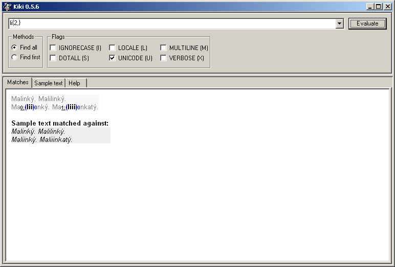
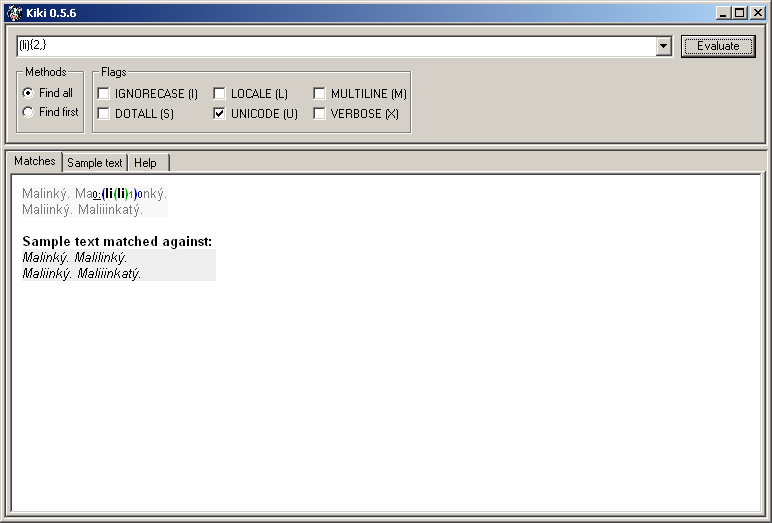
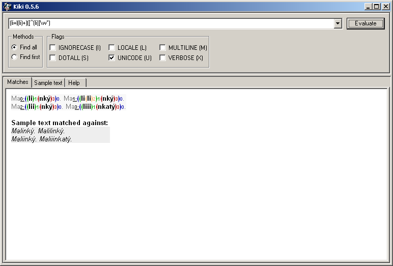
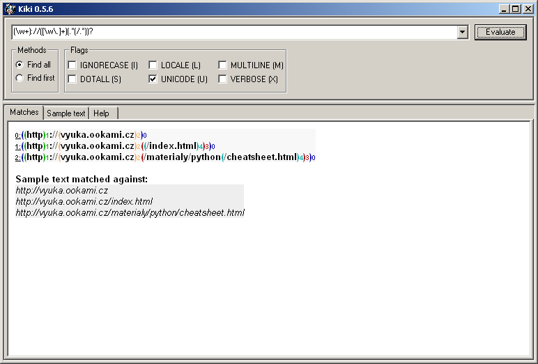
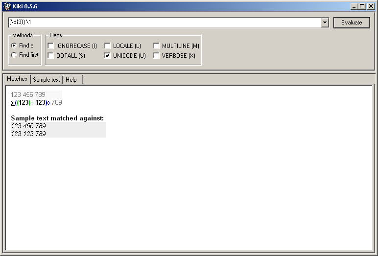
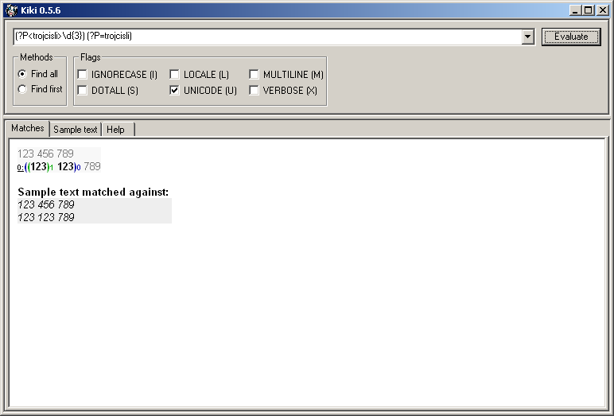
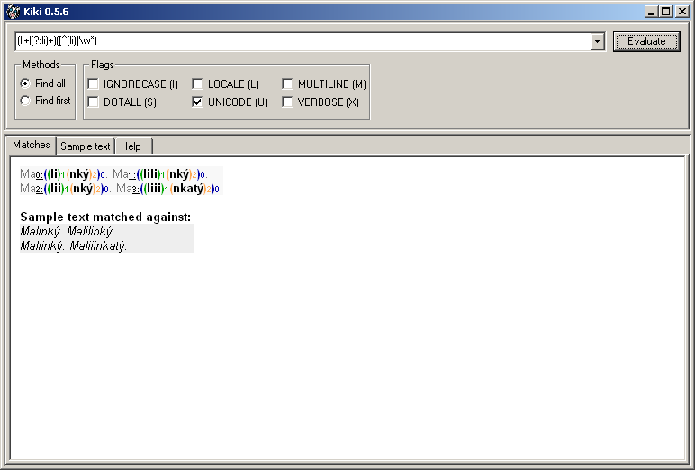

Skupiny
by Jiří Znamenáček
Úvod
Skupiny v regexpech, tedy podčásti regexpů uzavřené do (kulatých) závorek, mají v zásadě dvě použití:
- označení logických částí regexpů, na které je pak možné aplikovat další regexpové operátory (jako např. opakování apod.) nebo se na ně odvolávat (pozicí nebo za pomoci rozšíření jménem)
- součást označení nejrůznějších rozšíření základních regexpů (ať už standardizovaných nebo specifických pro příslušné prostředí)
Druhému bodu je pro jeho důležitost věnována samostatná kapitola, v následujících slajdech se tedy podíváme na použití skupin pro práci s podregexpy.
Skupiny a operátory
Začněme rovnou příkladem. Podívejte se na výstup následujících dvou rozdílných regexpů:
regexp: li{2,}

Tohle je „klasický“ regexp – hledáme výskyty písmene l následované alespoň dvěma písmeny i. Modré závorky na výstupu označují nalezené skupiny vyhovující celému regexpu.
regexp: (li){2,}

Nyní se význam regexpu změnil – operátor {2,} se díky uzávorkování nyní aplikuje na celou skupinu li. V důsledku tak hledáme výskyty skupiny li opakující se alespoň dvakrát za sebou. Modré závorky opět označují nalezené skupiny vyhovující celému regexpu, ale navíc se nám tu objevují zelené závorky, které odpovídají uzávorkovanému podregexpu.
Více skupin
Výhody skupin se začnou ukazovat hlavně ve chvíli, kdy jich použijete více a kdy vám tudíž regexp kromě hlavního zásahu (celý regexp) začne vracet i jednotlivé označené podskupiny.
Rozeberme si pro ukázku následující příklad:

Významy jednotlivých částí regexpů jsou následující:
-
(li+|(li)+)– zde vnější skupina (má pořadové číslo 1 a je zelená) slouží k zachycení obou alternujících možností (tj. buď řetězce s opakujícími se i nebo řetězce s opakujícícími se li), zatímco vnitřní (má pořadové číslo 2 a je oranžová) umožňuje aplikovat operátor+na více než jeden symbol -
([^li]\w*)– tahle část slouží k zachycení a zapamatování si alfanumerických znaků následujících po části předchozí (s vynecháním případných přebytečných skupin li); v konečném důsledku tak ve skupině číslo 3 (která má hnědou barvu) získáme seznam všech koncových částí slov
Zanořování skupin
Už v předchozím příkladu jsme viděli, že skupiny se dají zanořovat do sebe. Typicky tuto vlastnost využijete, když budete hledat podčásti nějaké větší části.
Zkusme pro ukázku rozdělit URL-adresu na protokol, server a cestu:

Zde tedy regexp postupně odchytává:
-
(\w+)://– část před :// je protokol -
://([\w\.]+)– část bezprostředně za ://, která se skládá pouze z alfanumerických znaků a teček, je jméno zdroje (reálně je ovšem ve jménu povoleno více druhů znaků) -
(.*(/.*))?– nepovinná část, která jako celek (skupina 3, hnědá) určuje plnou cestu ke zdroji, a jejíž případná podčást za posledním lomítkem (skupina 4, zelená) je zapamatována (zde) jako jméno souboru
Zpětné reference
Každá zachycená (byť i prázdná) skupina má přiřazené pořadové číslo. A pod tímto číslem se na ni (tím je myšlen přesně ten samý text, který regexp v uvedené skupině zachytil) můžeme pomocí speciální notace \číslo dále v regexpu odkazovat.
\1.
V následujícím příkladu podregexp \d{3} najde každý výskyt tří číslic za sebou a díky uzávorkování si je zapamatuje jako skupinu číslo 1. Díky tomu pak odkaz na tuto skupinu v podobě podregexpu \1 způsobí, že celý regexp bude hledat tři čísla následovaná (po mezeře, která je součástí celého regexpu) stejnými třemi čísly:

PS: Jelikož tříčíselné reference \NNN odpovídají oktalové reprezentaci znaku (a stejně tak reference začínající na znak nula \0NN), můžete se takto odkazovat pouze na devadesát devět skupin \1 až \99. Obecně je ale – zvláště u složitějších regexpů – mnohem lepší využít často přítomného rozšíření o pojmenované skupiny, které umožňuje odkazovat na skupiny pomocí jejich jména a ne pořadí (které má navíc tendenci rozbořit se při nejbližší úpravě regexpu ;-).
Rozšíření
Rozšířením regexpů obecně je věnována samostatná kapitola, ale část z nich se týká skupin, proto se s nimi seznámíme tady.
Pojmenované skupiny
První skupinové rozšíření jsme už nakousli dříve – jde o využití pojmenování pro zapamatované skupiny. Syntaxe je následující:
-
(?P<jméno>…)– regexp…bude zapamatován pod jménem jméno -
(?P=jméno)– odkaz na dříve vytvořenou regexpovou skupinu pod jménem jméno
Dříve uvedený příklad s trojcemi čísel by pak mohl vypadat třeba takto:

Skupiny bez zapamatování
V příkladech už jsme se setkali s použitím skupin, které jsme sice potřebovali kvůli vyrobení regexpu, ale už jsme nepotřebovali si je i zapamatovat. Pro podobné případy se hodí použít syntaxe (?:…), která podregexp … zabalí do samostatné skupiny, ale tato skupina nebude zapamatována a nebude později nikde zbytečně „překážet“.
Pro ukázku takto přepišme jeden z dřívějších příkladů:

(li)+ za (?:li)+ způsobilo, že tato skupina, kterou jsme používali pouze pro aplikaci operátoru + na dva znaky dohromady, už „neprobublává“ do výstupu.